이재선 목사의 시
안식월 시집
2011년 첫 안식월, 가평 필그림하우스의 밤 개구리 소리를 듣다가 처음 시를 적었습니다. 그 뒤로 광은기도원과 남해, 홍천의 산골에서 쉬고 기도하며 쓴 시가 314편이 되었습니다.
산과 나무, 바람과 바다, 그리고 그 사이에서 만난 사람들과 하나님 이야기입니다. 사진은 그때 그 자리에서 찍은 것입니다.


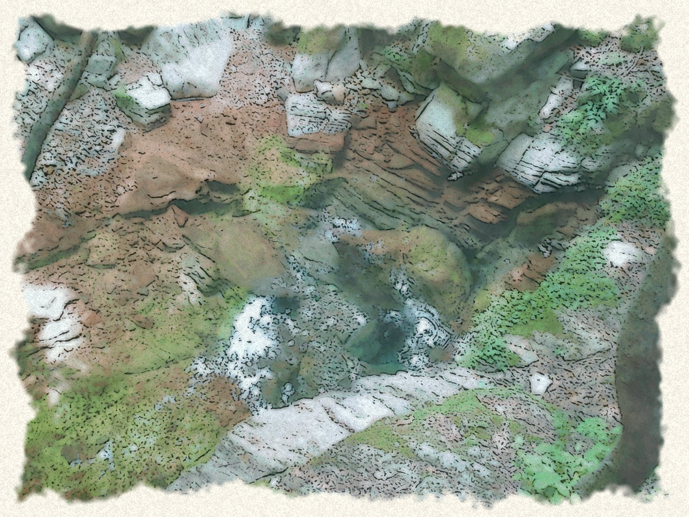
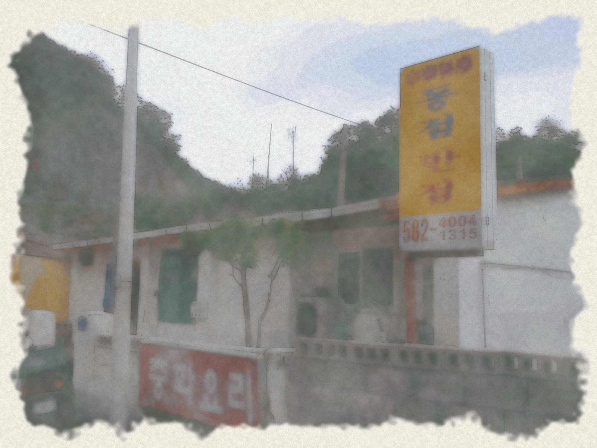
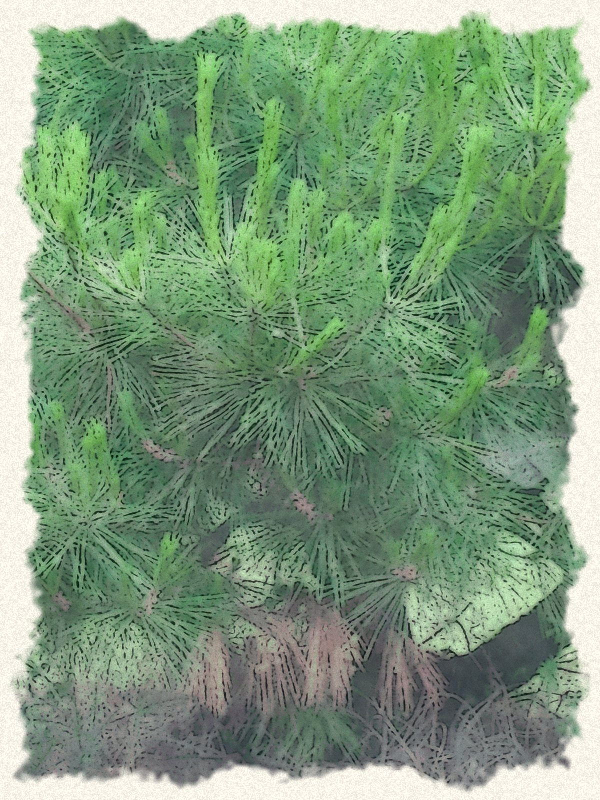
2011년 54편
- 필그림 하우스생활시 · 2011년 6월 10일가평의 아득한 산세를 보니 / “뫼만 높다 하더라”라는 옛 시인의 문구가 생각이 나누나
- 개골 개골, 맹꽁 맹꽁묵상시 · 2011년 6월 10일봄 모낸 논 지천의 개구리 소리 / 개골, 개골, 맹꽁 맹꽁
- 조 화생활시 · 2011년 6월 13일참 아름답다 / 필그림 하우스의 새벽 풍경
- 울타리울타리생활시 · 2011년 6월 13일구불 구불 논 두렁 곡선이 아름답다. / 피카소가 그려도 이렇게 아름답게 그릴 수 있을까?
- 생명의 빛생활시 · 2011년 6월 15일빛 / 강렬히 비취니
- 모기모기생활시 · 2011년 6월 15일깊은 산 속에 나를 맡겼다. / 고요와 적막이 영성인가 보다
- 검룡소자연시 · 2011년 6월 17일검룡소! / 태백의 정기 밝은 물 머금어
- 동점 반점생활시 · 2011년 6월 18일태백 산골 동점 마을 / 아주 작은 초라한 짜장면 집
- 인 사인 사생활시 · 2011년 6월 18일태백의 낯선 동점 마을 / 삶에 지친 굳은 얼굴
- 흥망성쇠(興亡盛衰)생활시 · 2011년 6월 23일솔 나무에 새순이 돋았다. / 연푸른 솔 곧게 세우고
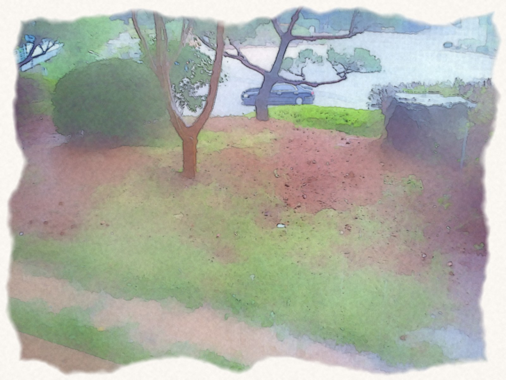
장 마묵상시 · 2011년 6월 23일장마 / 하늘에서 장대비가 쏟아진다.- 할렐루야! 권사님할렐루야! 권사님묵상시 · 2011년 6월 23일어느 여 성도님의 껍 씹는 소리가 거스린다 / 얼토당토 않는 소리
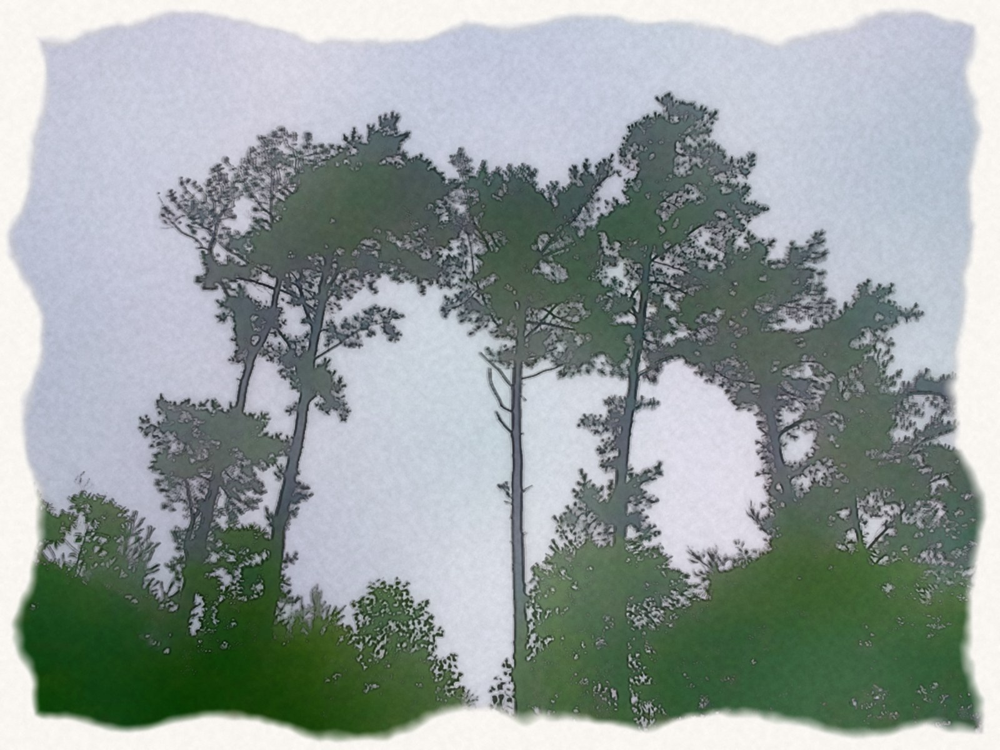
키가 큰 소나무생활시 · 2011년 6월 23일큰 키의 소나무 / 너는 대장부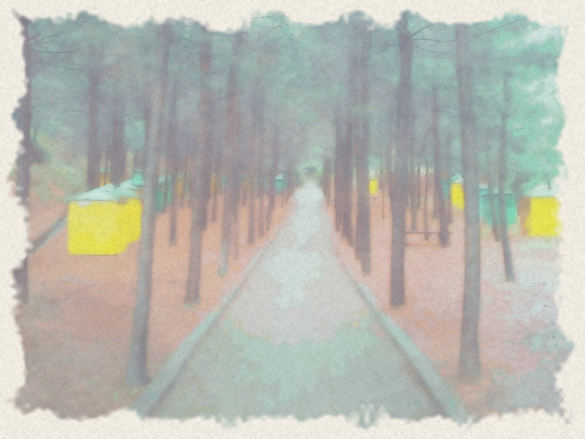
곶은 길 가리묵상시 · 2011년 6월 23일소나무가 줄을 섰네 / 그 가운데로 곶은 길 있네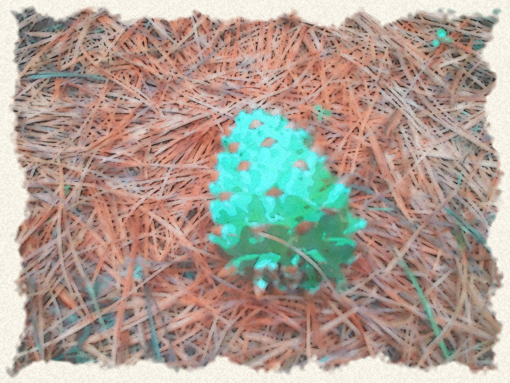
잣 한 송이자연시 · 2011년 6월 23일센 바람에 떨어진 잣 한 송이 / 넌 왜 떨어졌니?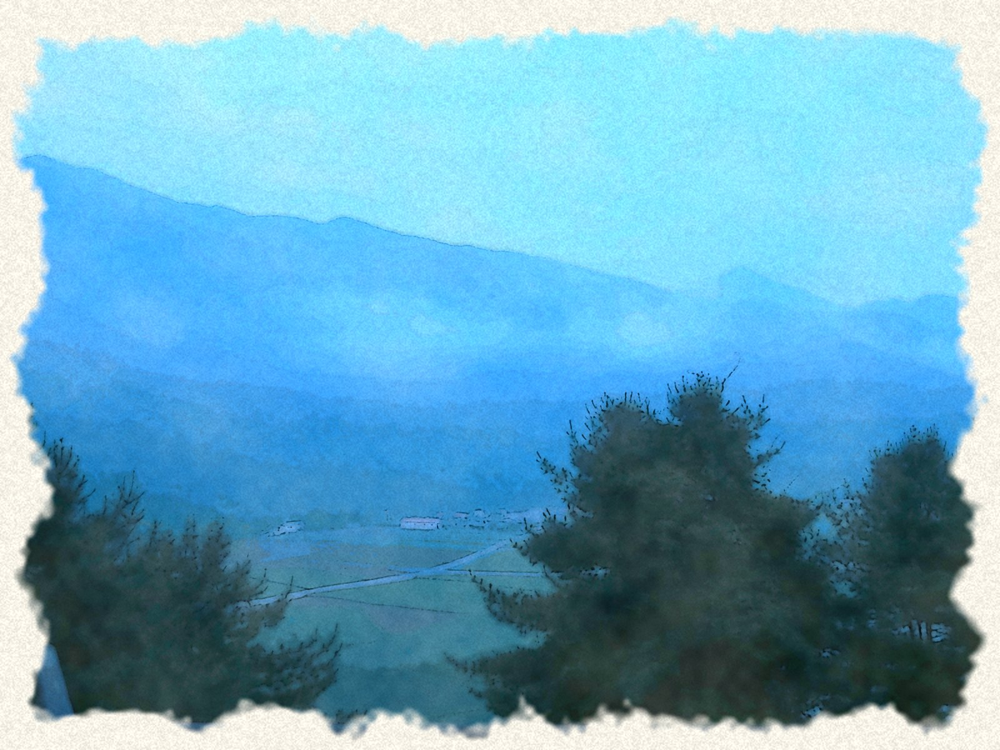
맑음묵상시 · 2011년 6월 23일광은기도원의 산 공기 / 참 맑다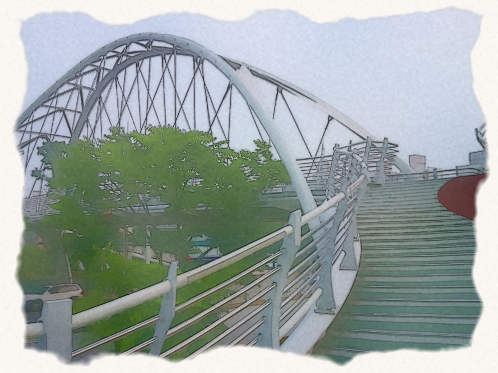
행복 다리생활시 · 2011년 6월 28일아름다운 다리 / 너 건장하니 이도 저도 편안하게 건너네- 장례식장장례식장생활시 · 2011년 7월 6일古稀(고희)앞둔 친구 후두암 사망 / 애도하러 친구 삼삼오오
- 손수레 침대손수레 침대생활시 · 2011년 7월 7일다리 밑 노숙인 할아버지 / 차가운 손수레
- 순대국집 아줌마순대국집 아줌마생활시 · 2011년 7월 8일장사 하느라 지친 몸 / 화장지 베게 삼아 새우잠
- 사는 게 뭔지사는 게 뭔지생활시 · 2011년 7월 8일“어서오세요!” / “이리오세요!”
- 주차남주차남생활시 · 2011년 7월 8일일본의 은퇴남 “젖은 낙엽”이라네 / 쓸어도 쓸어도 쓸리지 않는 젖은 낙엽
- 삼겹살삼겹살묵상시 · 2011년 7월 11일어머님이 기운이 없으시다 / 영양제 맞으러 병원에 가자는 말에
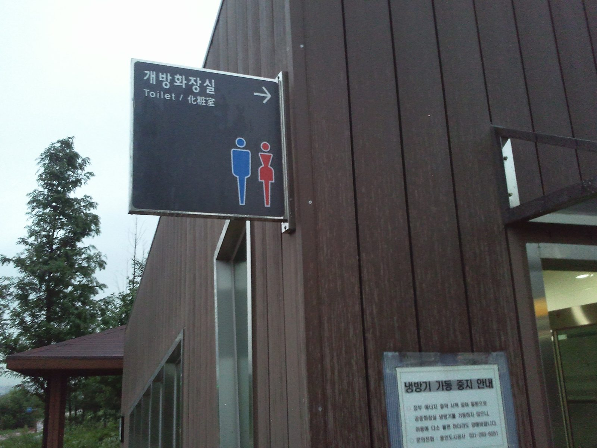
고마운 화장실생활시 · 2011년 7월 14일산책길에 나서 기분 좋은 발걸음 / 얼마 못가 갑작스레 배가 아파오네- 미 인미 인생활시 · 2011년 7월 14일오똑선 코 / 계란형 얼굴
- 도둑고양이도둑고양이묵상시 · 2011년 7월 14일만날 때마다 눈치 보는 고양이 / 경계하는 고양이 때문에 내가 더 놀라네
- 아파트아파트묵상시 · 2011년 7월 15일성냥갑 아파트 / 엄마 아빠 다정한 차 한 잔
- 기 도기 도묵상시 · 2011년 7월 15일소망은 제일 먼저 / 소망 없는 믿음 있을 수 없고
- 월급 봉투월급 봉투묵상시 · 2011년 7월 15일아버지 마음 주고 싶은 마음 / 월급 타와 “뭐 갖고 싶냐”
- 상처(傷處)상처(傷處)생활시 · 2011년 7월 27일상처! / 선상의 노동으로 다친 상처
- 아버지의 얼굴아버지의 얼굴생활시 · 2011년 7월 29일내 얼굴 / 코 흘리면 닦아주고
- 목욕탕목욕탕생활시 · 2011년 7월 31일아들 둘과 함께한 목욕탕 / 온탕 입수 시범 조교 아버지
- 중환자실중환자실생활시 · 2011년 8월 1일산소 호흡기 / 우주인 마스크
- 밥밥생활시 · 2011년 8월 8일혼자 먹는 밥 / 탄수화물을 먹는다
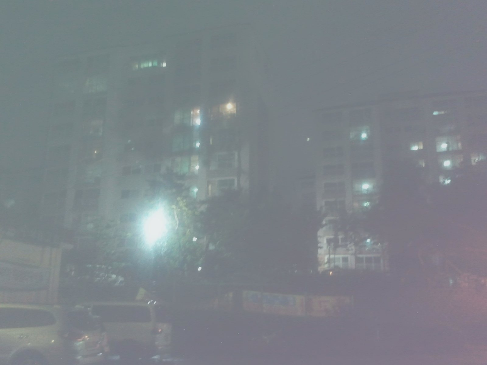
빛생활시 · 2011년 8월 8일세상이 밝다 / 너무 밝다- 구름에 몸 가듯구름에 몸 가듯자연시 · 2011년 8월 8일구름이 간다 / 달이 간다
- 풀벌레 소리풀벌레 소리자연시 · 2011년 8월 8일한 여름 풀벌레 소리 / 차 소리에 묻히네
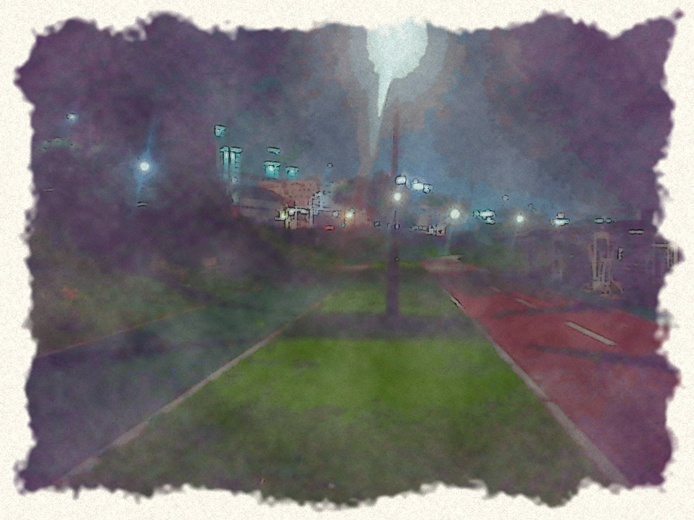
내 길생활시 · 2011년 8월 8일자전거 길 내 길 아니네 / 사람 걷는 길 내 길이네- 행복 충전소행복 충전소묵상시 · 2011년 8월 20일청정 태백에서 청심 친구 모였네 / 만사 제치고 달려온 무심 친구 반갑네
- 후회후회묵상시 · 2011년 8월 20일아내가 산책은 안 간단다 / 외식도 안 나선다
- 사랑사랑생활시 · 2011년 9월 1일나비는 팔랑팔랑 춤추는 사랑 / 잠자리 송긋송긋 물장구 사랑
- 소나무소나무자연시 · 2011년 9월 8일줄기는 울퉁불퉁 / 가지는 꼬불꼬불
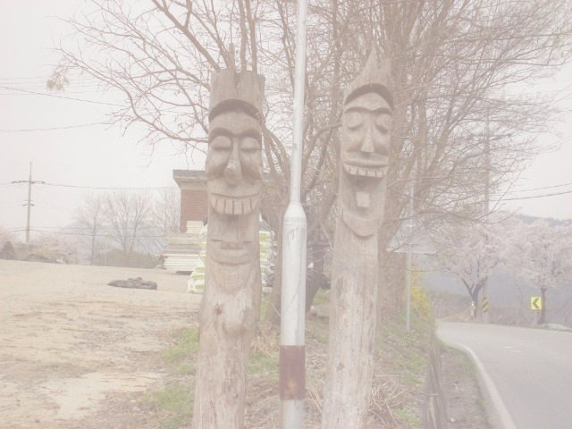
장 승생활시 · 2011년 9월 8일장승 둘이 서 있네 / 천하대장군- 불타는 달불타는 달생활시 · 2011년 9월 15일한가위 달 / 휘영청 밝으니 소망이 밝아오네
- 한 영혼한 영혼생활시 · 2011년 9월 17일한 가지 일 / 끝까지 하지 않으면
- 함 께함 께생활시 · 2011년 9월 26일홀로 걷는 종종 걸음 / 불안한 걸음
- 바 람바 람생활시 · 2011년 9월 26일시린 손 녹여주는 / 봄날의 따스한 바람
- 신호등신호등생활시 · 2011년 9월 29일집을 나서면 만나는 신호등 / 노오란 등 서라하건만
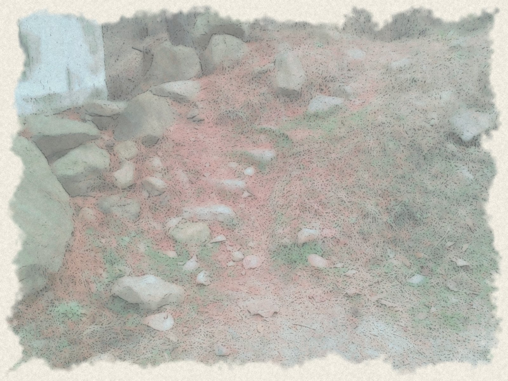
돌계단생활시 · 2011년 9월 29일깊은 산 속 좁은 길 / 인적 없는 외딴 길- 하늘 담기하늘 담기자연시 · 2011년 9월 29일하늘 보면 시원 / 하늘 날면 꿈결
- 이것이 영성인가?이것이 영성인가?생활시 · 2011년 6월 16일아내를 기다렸다. / 저녁을 가평에서 먹었다.
- 믿음 소망 사랑믿음 소망 사랑묵상시 · 2011년 7월 15일소망은 제일 먼저다 / 소망을 갖지 않으면 믿음도 없다
- 신 발신 발묵상시 · 2011년 9월 10일아이를 데리고 화장실에 들어온 젊은 아빠 / 그 아이와 아빠가 신고 있는 신발
- 새벽 길새벽 길생활시 · 2011년 6월 14일새벽기도 가는 중 / 맑은 공기 먹으러
2012년 36편
- 시작(詩作)하다시작(詩作)하다생활시 · 2012년 1월 5일시, / 50이 되니 시가 스물스물 삐져나온다.
- 흐르게 하소서!흐르게 하소서!묵상시 · 2012년 1월 14일피를 빠는 거머리처럼 / 나를 파는 분노
- 보혈 가족보혈 가족묵상시 · 2012년 1월 14일예수님이 낳으신 보혈 가족 / 보기만 하여도 울컥
- 행 복행 복묵상시 · 2012년 1월 21일행복 / 나의 흐뭇함
- 천천히 걷기천천히 걷기생활시 · 2012년 1월 24일오랜만에 / 천~천~히~ 걸어본다
- 눈 오는 날눈 오는 날자연시 · 2012년 1월 24일내 눈이 글을 과독했다 / 먹은 책 소회를 위해 문을 나섰다
- 아침 파도아침 파도자연시 · 2012년 1월 30일아침 파도소리 / 잠을 깨우나 싶더니
- 조금조금생활시 · 2012년 2월 8일조금만 기다리세요 곧 나옵니다 / 조금이면 도착합니다
- 괴목(槐木)괴목(槐木)묵상시 · 2012년 2월 15일구불리고, 꼬이고, 뒤틀린 소나무 / 너는 어쩌다 그렇게 되었니
- 선물선물자연시 · 2012년 2월 23일손해 날까봐 주는 대로 빼먹지 않고 받아 먹은 나이 / 나이를 먹었는데 눈이 무겁고
- 거울거울생활시 · 2012년 3월 28일거울에 이 물질의 흔적 가득 / 닦아내고 싶다
- 봄 바람봄 바람자연시 · 2012년 4월 3일봄 바람 / 거센 바람
- 자전거자전거생활시 · 2012년 4월 4일달리는 자전가 / 패달을 굴려야 간다
- 흔적흔적생활시 · 2012년 4월 17일흔적 남기기 / 걸어간 흔적
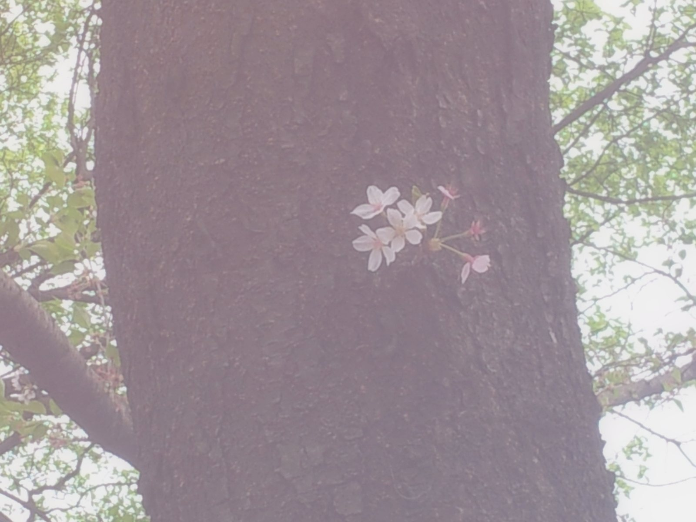
왕따생활시 · 2012년 5월 1일너는 왜 홀로 피어 있니 / 화려한 화군(花群)을 멀리하고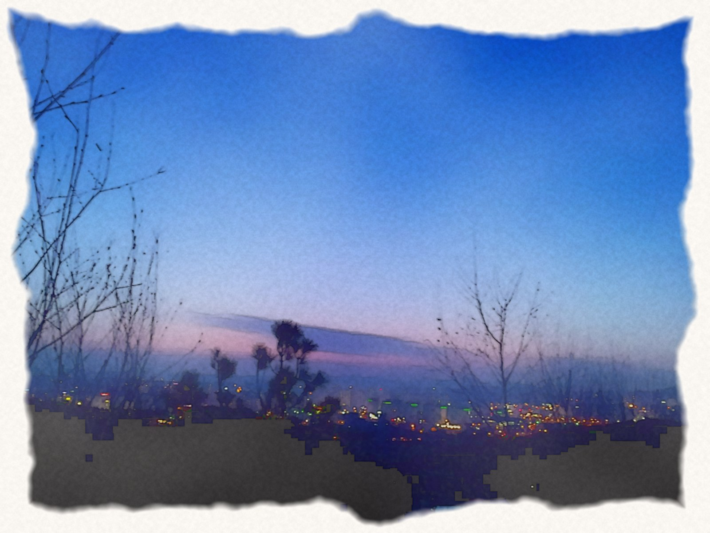
해가 지면...자연시 · 2012년 5월 3일해가지면 어두워집니다 / 해가 넘어가면 캄캄해집니다- 돌아가는 길돌아가는 길생활시 · 2012년 5월 3일돌아가니 자연스럽다 / 돌아가는 길에 생각하게 하누나
- 카네이션 훈장카네이션 훈장생활시 · 2012년 5월 28일♬연분홍 치마가 봄바람에 휘날리더라♬ / 옛 노래에 흥어림
- 벤치에 누워벤치에 누워묵상시 · 2012년 6월 6일일상을 떠나 산 속 벤치에 누워 / 산들 신선바람 맞는다
- 맛맛생활시 · 2012년 7월 30일사람이 좋으니 / 음식이 맛있고
- 산 바람산 바람자연시 · 2012년 8월 2일찜통 더위 / 앉아만 있어도 땀 줄줄줄
- 왜?왜?생활시 · 2012년 8월 3일한 계절 하루 가듯 일 년이 나흘이네 / 이토록 빠른 세월을 사는 이들
- 밤 비행기밤 비행기자연시 · 2012년 8월 3일밤 하늘에 비행기가 떳다 / 파란 불, 발깐 불 뽐내며 붉은 노을 가른다
- 시(詩)시(詩)묵상시 · 2012년 8월 3일시를 쓰니 나를 안다 / 시를 써라 나무를 만난다
- 작은 엄니작은 엄니묵상시 · 2012년 8월 8일작은 엄니가 가셨다 / 투석에 신장암의 짐을 벗어 던지셨다
- 강천산강천산자연시 · 2012년 11월 6일하늘 비 내려 모이고 / 맑은 물 쌓여 물골
- 김장김장생활시 · 2012년 11월 20일사계절 뚜렷 한겨울 추위 어떻게 견디나 / 푸짐한 김장 든든한 한파
- 홀로홀로묵상시 · 2012년 12월 12일모태 속 외로운 달음박질 / 결국 나 홀로 생명 되었거늘
- 물물자연시 · 2012년 12월 19일나의 아버지는 물이셨다 / 6.25때 쏟아지는 비속에서 공비를 토벌하셨다
- 산다는 건산다는 건자연시 · 2012년 4월 18일다들 먹고 살기 바쁘다 / 더 비싼 차 타기 위해
- 매미매미자연시 · 2012년 8월 2일울보 매미 / 여름 내내
- 달 가린 솔달 가린 솔자연시 · 2012년 8월 3일휘영청 보름 달 풍만키도 하여라 / 붉은 달 빛 가린 솔 얄밉도다
- 첫 낙엽첫 낙엽묵상시 · 2012년 9월 13일9월 초순 / 벌써 가을 냄새가 난다
- 나는 제자다나는 제자다묵상시 · 2012년 9월 14일하나님은 나더러 아들이란다 / 예수님은 우리더러 제자란다
- 이라서이라서생활시 · 2012년 10월 10일호두 껍질 동토 녹여 / 생명 주머니 만드는
- 비로소비로소자연시 · 2012년 10월 10일뒤에서 밀고 앞에서 당기고 / 땀방울 비직비직
2013년 36편
- 방의 예찬방의 예찬생활시 · 2013년 1월 10일그리 좁은 것이 어찌 우주를 담고 있는가 / 초라하기 그리 없지만 고귀한 품격이 길러지는 곳
- 따스함따스함묵상시 · 2013년 1월 23일매서운 쇠사슬 한파 온 땅 얼음 / 따스한 바람 앞에 이내 굴복
- 설 송(雪松)설 송(雪松)생활시 · 2013년 2월 6일밤사이 눈 손님이 왔다 / 아주 무거운 눈이
- 젊음젊음생활시 · 2013년 2월 13일세상에서 가장 소중한 것을 꼽으라면 당연 “젊음”이라 하겠습니다 / 왜 젊음이 귀하냐고 물으면 “겁 없음”이라고 말하겠습니다.
- 다람쥐다람쥐자연시 · 2013년 2월 13일봄에 만난 다람쥐 / 인사도 제대로 못 나눈 사이
- 빠알간 십자가빠알간 십자가묵상시 · 2013년 2월 13일(히 12:4) 너희가 죄와 싸우되 아직 피흘리기까지는 대항하지 아니하고 / 땅거미 두리우는 어둘녁
- 눈으로 와 주세요눈으로 와 주세요자연시 · 2013년 2월 13일물 / 비로 말고 눈으로 와 주세요
- 늘그막에늘그막에묵상시 · 2013년 2월 15일젊었을 땐 연구를 했습니다 / 양복과 넥타이를 골랐습니다
- 바람바람자연시 · 2013년 2월 15일바람이 나를 따라 옵니다 / 세차게 몰아 붙입니다
- 준비준비자연시 · 2013년 2월 15일한 겨울 눈 밭에 씨눈 방울이 맺혔습니다 / 몸에 틔울 씨를 준비했나 봅니다
- 시든 장미시든 장미생활시 · 2013년 2월 15일산 속 시든 장미 한 송이 / 눈 속에 숨어 있고
- 종치기종치기생활시 · 2013년 2월 20일온 대지가 깊은 잠에 가쳐 있을 때 / 누구도 흔적 남기지 못한 함박눈 쌓인 곳
- 겨울 벤치겨울 벤치자연시 · 2013년 2월 20일한 겨울의 벤치 / 한파 속 눈 위에 누운 멍청한 놈
- 배너 광고배너 광고생활시 · 2013년 2월 20일보이지도 않고 / 혹시 보여도 무시하고
- maid in GODmaid in GOD생활시 · 2013년 2월 21일'maid in GOD' / 사람은 똑같이 만든다
- 갈대 가족갈대 가족자연시 · 2013년 10월 16일서로 부비며 / 사랑 나누는
- 게으른 벌게으른 벌생활시 · 2013년 10월 16일게으른 벌 / 이제 나와
- 사과 맛사과 맛생활시 · 2013년 10월 17일두툼한 사과 살 / 한 뼘 베어내
- 게장의 참 맛게장의 참 맛생활시 · 2013년 10월 17일두툼한 살코기의 엉기는 씹힘보다 / 가느란 다리 한 개 물고
- 미술관미술관생활시 · 2013년 12월 6일현대 미술 100선 보러 / 밀고 밀리는 차량 행렬 뚫고
- 삶의 향기삶의 향기생활시 · 2013년 12월 6일현대 미술 백선 / 밀고 밀리는 차량 행렬 뚫고
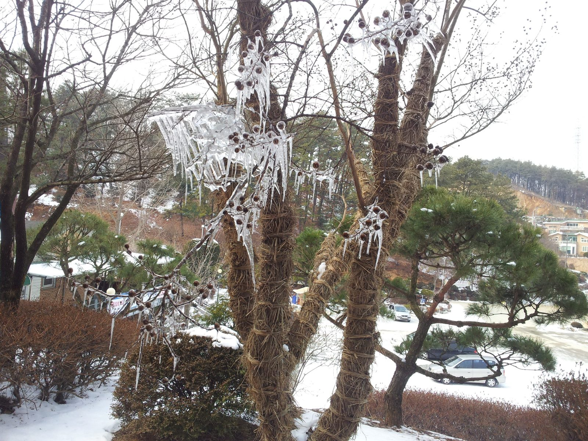
하얀 눈묵상시 · 2013년 12월 13일지난 밤 흰 눈 소복 / 온 세상을 하얗게- 바위 가르기바위 가르기생활시 · 2013년 12월 24일바위에 소나무를 심자 / 바늘 틈도 없는 놈에 어찌 나무를
- 사랑은......사랑은......묵상시 · 2013년 12월 24일사랑은 적당한 것이 아닙니다. / 사랑은 넘치는 것입니다.
- 높은 자리높은 자리생활시 · 2013년 12월 24일주도권은 사랑한 사람이 갖는 것입니다 / 사랑을 하면 주도권을 갖게 됩니다
- 생화(生花)생화(生花)생활시 · 2013년 12월 27일이름 모를 무덤 / 한 다발 때 묻은 조화
- 한 조각 천한 조각 천묵상시 · 2013년 2월 20일갈려지고 / 찢겨지고
- 두려운 자유자두려운 자유자생활시 · 2013년 2월 21일누가 나를 미워 한단다 / 뭐가 두려운가
- 눈의 물눈의 물자연시 · 2013년 2월 28일갓 난 아이의 신호탄 눈물 / 엄마와 생이별 아가의 청천벽력 눈물
- 시인시인생활시 · 2013년 3월 14일시는 다리다 / 사물과 인간을 잇는다
- 빗소리빗소리생활시 · 2013년 6월 11일창문 밖 소소한 비 / 들릴 듯 말 듯 얕은 비손님
- 단풍(丹楓)단풍(丹楓)생활시 · 2013년 9월 11일북풍(北風) 대낮 아직 열기 머금은 대지(大地) / 중병(重病) 걸려 숨 떨어진 입새
- 어느 목사의 기도어느 목사의 기도생활시 · 2013년 11월 14일주여! / 나를 높여주옵소서!
- 주고 잡아서주고 잡아서생활시 · 2013년 12월 7일기뚱기뚱 / 꼬무락 꼬무락
- 가을 나무가을 나무자연시 · 2013년 12월 7일짓 푸름 옷 벗고 / 잿빛 낙엽 외투로 갈아입은
- 간장 게장간장 게장생활시 · 2013년 10월 17일두툼한 살코기의 엉기는 씹힘보다 / 가느란 다리 한 개 물고
2014년 164편
- 스타(star)스타(star)생활시 · 2014년 1월 3일거칠고 / 뜨겁고
- 흙(土)흙(土)자연시 · 2014년 1월 6일土, 흙토 / ＿(땅)에 十(나무) 심은 모양
- 소나무 숲소나무 숲자연시 · 2014년 1월 6일앞서거니 뒤서거니 / 밀고 당기고
- 주인공주인공생활시 · 2014년 1월 6일평화로운 호수 / 소나무 전나무 어울림
- 밤의 예찬밤의 예찬자연시 · 2014년 1월 7일너무 밝아 볼 수 없고 / 너무 가까워 같이 있을 수 없고
- 눈(目)눈(目)자연시 · 2014년 1월 8일누가 눈이 보배라 했는가? / 너무 먼 것도
- 자연(自然)자연(自然)자연시 · 2014년 1월 9일자연은 교과서 / 일 단원은 땅
- 넌 누구냐?넌 누구냐?생활시 · 2014년 1월 16일넌 누구냐? / 엄마의 아들
- 1월에1월에생활시 · 2014년 1월 16일오색찬란 단풍 즐기는 새 혹한의 겨울 준비 한창인 나무 / 한겨울 한파에도 벌써 싹틔울 준비
- 선수선수생활시 · 2014년 1월 17일운동선수 / 화가
- 헌시(獻詩)헌시(獻詩)묵상시 · 2014년 1월 20일수 천리 먼 바다에서도 / 번식 주머니 강 언덕을 잊지 않고
- 생명의 모체(기탄잘리1)생명의 모체(기탄잘리1)찬양시 · 2014년 1월 22일떠오르는 태양, 불덩어리 눈에 넣어주시고 / 수 억경 에너지 몸에 채워 주시는
- 여행(餘行)여행(餘行)생활시 · 2014년 2월 6일수 십 명 무리 지어 / 이곳저곳 찍고 또 찍고
- 마음 그릇마음 그릇묵상시 · 2014년 2월 11일하나님은 마음 그릇 / 어떤 맘이든 다 담는 큰 그릇
- 연기연기생활시 · 2014년 2월 14일고단한 하루 노동 뒤로하고 / 단란한 집 식구 때를 위해 밥을 짓누나
- 영웅 이순신영웅 이순신생활시 · 2014년 2월 18일조용한 나라 조선을 삼키려 / 수천 척 일선 몰려와
- 하나님을 만나다(기탄잘리5)하나님을 만나다(기탄잘리5)찬양시 · 2014년 2월 21일알고 있는 하나님은 그의 하나님 / 만난 하나님이 나의 하나님
- 역설(逆說)역설(逆說)묵상시 · 2014년 2월 24일알면 알수록 내 뜻대로 / 넘치는 힘 쓰고 싶어 안달
- 이제야(기탄잘리6)이제야(기탄잘리6)찬양시 · 2014년 2월 26일이제야 / 하는 하나님에서 만난 하나님이 되었네
- 바다바다자연시 · 2014년 2월 28일엊그제 띄운 그 배 / 오늘도 노 부부
- 한려수도Ⅰ한려수도Ⅰ자연시 · 2014년 3월 1일어둠 그득히 머금은 해변 / 한려수도 초록 풍광 소용없어라
- 새벽에새벽에자연시 · 2014년 3월 5일아침 해도 게을러 산마루 오르지 못한 때 / 홀로 깨어 이불 개키고 옷깃 여미고
- 엄마엄마생활시 · 2014년 3월 6일십분 만에 뚝딱 / “맛있다” 한 마디로 끝
- 홍메실홍메실생활시 · 2014년 3월 6일꽃샘 추위 / 눈도 아직 녹지 않고
- 한려수도Ⅱ한려수도Ⅱ자연시 · 2014년 3월 7일금산 마루 두 발 닿으니 / 동서남북 사방 툭 터진 바다 절경
- 망대(望臺)망대(望臺)생활시 · 2014년 3월 7일왜군 출현 연기 한 번에서 / 왜선 조선 땅 닿으면 다섯 번까지
- 낚시낚시묵상시 · 2014년 3월 9일남해 / 모태처럼 푸근한
- 항구(기탄잘리8)항구(기탄잘리8)찬양시 · 2014년 3월 12일줄 풀린 나룻배 / 성난 바다 흥분한 파도에 부딪는다
- 진달래진달래자연시 · 2014년 3월 19일붉은 것도 아닌 것이 / 푸르지도 못하여라
- 주심(主心)주심(主心)묵상시 · 2014년 3월 20일잔바람 연가지 팔랑 / 큰 바람 줄기 휘청
- 배배생활시 · 2014년 3월 20일배 / 물이 차 가로 막아도 잘도 건넌다
- 진달래 꽃(현대판)진달래 꽃(현대판)자연시 · 2014년 3월 20일나 만나기 싫어 / 떠날 때에는
- 별별자연시 · 2014년 3월 22일별 / 칠흙 어둠 속 희 점
- 맛맛생활시 · 2014년 3월 26일생명의 투쟁 / 아가의 엄마젖 물고 늘어짐
- 선택(選擇)선택(選擇)생활시 · 2014년 3월 29일세상은 / 더
- 봄 비봄 비자연시 · 2014년 3월 29일부슬부슬 비가 대지를 두드린다 / 바다 위에 물장구
- 둘둘생활시 · 2014년 3월 30일數(수)에서 / 하나와 둘은 하나 차이
- 태양태양자연시 · 2014년 3월 31일태양이 떴다 / 그러나
- 노을노을자연시 · 2014년 3월 31일일출 / 혼자 뜨는 해
- 벚꽃벚꽃자연시 · 2014년 3월 31일생명의 시작 / 붉은 꽃샘
- 사진 작가사진 작가생활시 · 2014년 3월 31일소박한 복장 봄나들이 / 꽃구경에 들뜬 마음
- 산골산골자연시 · 2014년 4월 7일산골 시냇가 / 가뭄 끝에
- 반달반달자연시 · 2014년 4월 7일채움의 달 / 보름달
- 남해(南海)남해(南海)자연시 · 2014년 4월 11일간소한 짐 꾸려 안식년 지내려 남해로 / 어디서 뭘 먹으며 무엇하고 지낼 걱정은 하지도 않았소
- 새새자연시 · 2014년 4월 12일심천계곡 새 소리의 아름다움에 귀가 쫑긋 / 읍조리는 예쁜 노래의 서로 다름에 놀라고
- 기다림(찬양시10)기다림(찬양시10)찬양시 · 2014년 4월 13일예배를 기다리는 시간 / 찬양 속에 감격의 눈물
- 땅땅자연시 · 2014년 4월 13일봄 날 언 땅 뚫고 새싹 돋고 / 땅의 기운 모아 쑥, 냉이, 달래되니
- 산의 예찬산의 예찬자연시 · 2014년 4월 14일누가 말했던가 / 산은 오르라고 있다고
- 問安(문안)問安(문안)생활시 · 2014년 4월 14일심신 지쳐 / 한겨울 볏짚처럼
- 熟省(숙성)熟省(숙성)생활시 · 2014년 4월 17일벌레 먹은 대추 / 일찍 붉은 빛으로 물들 듯
- 솟구치는 나무솟구치는 나무생활시 · 2014년 4월 17일앞동산 빼곡한 나무들의 몸짓 / 너도 나도 햇빛 보려 군웅할거
- 당신은 밀알이셨습니다당신은 밀알이셨습니다묵상시 · 2014년 4월 19일부모님의 따스한 사랑의 보살핌 속에 / 꽃다운 청춘 이십대의 청순함을 뒤로하고
- 여린 별여린 별묵상시 · 2014년 4월 23일어느 봄 날 / 밤하늘을 빼곡히 수놓은 각양의 별들
- 동맥경화동맥경화생활시 · 2014년 4월 23일아침 점심 저녁 / 육식, 해물, 요리까지
- 삼림(森林)삼림(森林)자연시 · 2014년 4월 24일곡선미 자태 뽐내며 잘 자란 소나무 / 밑 둥부터 휘감아 칭칭 동여맨 다래 줄기
- 꽃 심꽃 심자연시 · 2014년 4월 24일땅 속 기운 힘차게 빨라 올리고 / 태양의 뜨거운 기운 모아
- 어머니의 밥상어머니의 밥상생활시 · 2014년 4월 24일머위 한 잎마다 정성들여 다듬고 / 천일염 배송 받아 아홉 번 굽고 또 굽고
- 잠든 산잠든 산묵상시 · 2014년 4월 24일생의 불덩어리 해가 대지를 등지면 / 산이 깊은 잠을 위해 어둠의 요를 펴고
- 오일장오일장생활시 · 2014년 4월 26일겨울 잠 깬지 어제일 같거늘 / 어느 덧 태양 온기 머금은 대지
- 민들레민들레자연시 · 2014년 4월 26일네 운명 기구하여 찾은 곳은 언제나 / 돌작 밭, 시멘트 틈, 심지어 아스팔트 갈라진 곳
- 세월호세월호생활시 · 2014년 4월 29일육천톤급 인천-제주간 여객선 / 오백여명의 어린 학생과 아름다운 사연 싣고
- 시간시간생활시 · 2014년 4월 29일괘종시계, 탁상시계, 휴대폰까지 / 초침 째깍째깍 촐싹대고
- 잣나무잣나무자연시 · 2014년 4월 29일봄여름가을 언제나 변함없는 푸러름 / 겨울까지도 푸름을 양보하지 않는구나
- 산나물산나물자연시 · 2014년 5월 2일큰 나무 살짝 비켜 다소곳 앉아 / 해 사랑 그득히 담아
- 주님의 인도 받기(기탄잘리13)주님의 인도 받기(기탄잘리13)찬양시 · 2014년 5월 3일급한 일이 있고 / 중요한 사역이 있어
- 가족(家族)가족(家族)생활시 · 2014년 5월 5일거리로 막을 수 없는 / 기억으로 지워지지 않는
- 정자나무정자나무자연시 · 2014년 5월 7일멀지 감치 혼자 서 있는 / 덩치 큰 고목(古木)
- 어버이 날어버이 날생활시 · 2014년 5월 7일몸과 마음 바쳐 진액 쏟은 부모님께 / “고맙습니다”감사의 전화
- 어떤 낚시꾼어떤 낚시꾼생활시 · 2014년 5월 13일월척 대망 품고 낚시 대 드리우고 / 명당 찾아 강태공들 모여들더니
- 그대 이름그대 이름묵상시 · 2014년 5월 19일한반도의 허리 되어 든든히 받치는 산맥의 정기 / 팔도강산 흐르게 하는 물 근원 검룡소 수맥
- 애기 나무애기 나무생활시 · 2014년 6월 10일큰 키 / 쭉 뻗은 줄기
- 기도(祈禱)기도(祈禱)묵상시 · 2014년 6월 26일성경에 반복되는 ‘기도’ / 예수님도 ‘구하라, 찾으라, 두드리라’
- 감사(感謝)란?감사(感謝)란?묵상시 · 2014년 7월 3일감사는 / 쓸수록 불어나 쌓이는 태산
- 신선신선생활시 · 2014년 7월 17일반바지에 티셔츠 / 찜질 팩 배에 차고
- 사부곡사부곡생활시 · 2014년 7월 17일가물에 콩 나듯 / 아버지의 뒤춤
- 투명 옷 천사투명 옷 천사묵상시 · 2014년 7월 17일생면부지 병든 부부 / 혈육 나눈 형제인 듯
- 이렇게 좋은 날이렇게 좋은 날묵상시 · 2014년 7월 30일늦은 밤 깊은 잠 / 일찌감치 번쩍 뜨인 눈
- 신발신발생활시 · 2014년 7월 31일신발은 성격입니다 / 긁힌 자국은 급한 성격
- 아침 예찬아침 예찬자연시 · 2014년 8월 7일아침은 그냥 아침이 아니고 / 꼭 ‘새 아침’이 어울린다
- 그런 줄 알았다그런 줄 알았다생활시 · 2014년 8월 9일남들 이겨먹고 / 더 높이 오르고
- 30년30년생활시 · 2014년 8월 13일30년 지기 둘러앉으니 / 백발, 소갈머리, 주변머리 세월에 내주고
- 우리는 하나우리는 하나생활시 · 2014년 8월 20일나무가 하나인 것 같지만 / 수 만 가지 뻗어 있으니
- 희망희망묵상시 · 2014년 8월 20일산골 기도원 전도 세미나 / 산골짝 외딴섬 멀다 않고 달려온
- 십자가십자가묵상시 · 2014년 8월 23일어떤 길을 가고 있는지 / 왜 그 곳을 가야 하는지
- 아버지의 시(詩)아버지의 시(詩)묵상시 · 2014년 8월 27일아버지의 임종을 지키지 못한 죄인 / 깊은 곳에 있는 내가 말하길
- 맨발맨발생활시 · 2014년 9월 3일오르고 또 오르기만 하는 고층 집터 / 전망이 좋아 로얄층이라나
- ‘여기’, ‘거기’‘여기’, ‘거기’생활시 · 2014년 9월 4일내가 / 할 수 있는 것도
- 모든 이의 열망모든 이의 열망생활시 · 2014년 9월 5일절망 없는 전진 / 불안 없는 평안
- 무너짐의 행복무너짐의 행복생활시 · 2014년 9월 11일겉 사람 / 준수하고
- 걸음걸음생활시 · 2014년 9월 11일강인함이 약함 / 지성이 병의 근원
- 소리의 역설소리의 역설묵상시 · 2014년 9월 16일강렬한 태양에 / 바싹 마른 낙엽
- 갯벌갯벌자연시 · 2014년 9월 26일바다와 뭍의 사랑 / 염수와 흙의 만남
- 가을 하늘가을 하늘자연시 · 2014년 10월 1일멀기는 장망성 / 밝기는 아기는 눈동자
- 통로통로묵상시 · 2014년 10월 1일생명 만듦의 비밀 / 아기 탄생의 통로
- 나무나무자연시 · 2014년 11월 19일춥다고 움츠리지 말아요 / 꽃 다시 피는 봄이 올 거예요
- 아파트아파트생활시 · 2014년 11월 19일오늘은 집에 들어오나요 / 나도 외롭답니다
- 자동차(自動車)자동차(自動車)생활시 · 2014년 11월 19일당신을 늘 모시니 행복합니다 / 너무 빨리 달리지 마세요
- 공기(空氣)공기(空氣)생활시 · 2014년 11월 19일내가 누구인지 아세요 / 당신의 생명의 보고랍니다
- 볼펜(Ball point pen)볼펜(Ball point pen)생활시 · 2014년 11월 19일예쁘지 않다고 던지지 마세요 / 잘만 쓰면 ‘진달래 꽃’이 나와요
- 행복행복묵상시 · 2014년 11월 25일나를 떠밀지 마세요 / 그대 안에 있고 싶어요
- 나만 . . .나만 . . .생활시 · 2014년 12월 2일다 받는 사탕, 기념품, 도시락 나만 . . . / 다 있는 머리카락, 건강, 직장 나만 . . .
- 춤춤생활시 · 2014년 12월 2일부는 바람에 흔들리는 풀들의 바람 춤 / 자유로운 하늘거림의 혼돈의 조화
- 인화인화생활시 · 2014년꽃보다 더 아름다운 생명 / 꽃구경 온 애기 엄마
- 하늘하늘자연시 · 2014년하늘 향하여 / 산도
- 오늘오늘생활시 · 2014년오늘은 / 오는 날
- 십자가십자가묵상시 · 2014년십자가 / 무겁고 중한
- 홍수에 떠밀린 부유물홍수에 떠밀린 부유물묵상시 · 2014년몸 덩어리 산화되고 널부러진 뼈들 / 큰 파도 요동치는 망망대해 기름 한 방울
- 밤의 하나님(기탄잘리4)밤의 하나님(기탄잘리4)찬양시 · 2014년뙤약볕 하루해 힘겨운 노동 버거울 즈음 / 해를 넘겨 산 넘어 보내시며
- 한 숨도 이어가지 못할 것 같은한 숨도 이어가지 못할 것 같은묵상시 · 2014년뒷목을 치솟아 오르는 / 조여 오는 막히는 숨
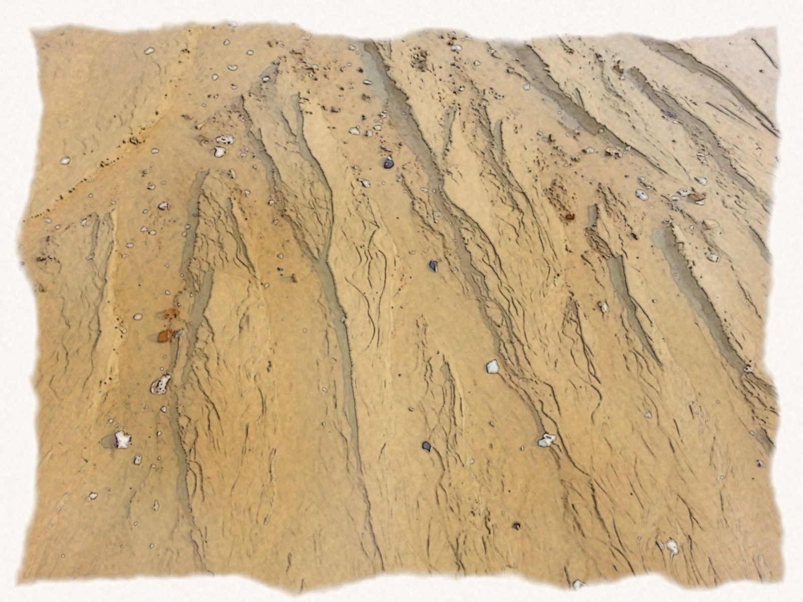
은모래자연시 · 2014년파도가 슬며시 다가와 / 바닷가 부드런 모레를 살포시 쓰담는다- 진갈래 꽃(진짜 갈래의 준말)진갈래 꽃(진짜 갈래의 준말)묵상시 · 2014년나 보기 싫어 / 떠나는 성도
- 어떤 남자 일생어떤 남자 일생생활시 · 2014년젊어서 / 생계 꾸리고
- 연 습연 습생활시 · 2014년어린 애기 걷기 연습 / 선수의 반복 훈련
- 도시락도시락생활시 · 2014년둘이 함께 한 등산 / 떠오른 시상(詩想)
- 약 함약 함묵상시 · 2014년아파보니 / 병든이 심정 헤아려지고
- 봄 산봄 산자연시 · 2014년겨울 잿빛 벗어던지고 / 옅은 푸른 봄옷으로 갈아입은 산
- 우주(宇宙)우주(宇宙)자연시 · 2014년세상은 온통 부활의 증거들의 산더미 / 세포가 부활하고 모태에서 생명의 씨가 잉태되고
- 기다림기다림생활시 · 2014년42.195km의 긴 장정의 결승선을 끊는 것 같은 짜릿함 / 적금 통장에 적립금이 쌓여가는 뿌듯함
- 사고팔고사고팔고생활시 · 2014년먹는 것 / 입는 것
- 힘힘생활시 · 2014년힘 / 손이 아니라 팔에
- 선물(膳物)선물(膳物)자연시 · 2014년나는 글을 쓴다 / 아무도 알아주지 않으면 어떻하나
- 마음마음생활시 · 2014년돌같이 굳은 젊음의 의협심 / 세월이 약이 되어
- 사목(死木)사목(死木)묵상시 · 2014년땅에 뿌리박고 / 육중한 줄기 석가래인 듯
- 밤 한 톨밤 한 톨자연시 · 2014년늦여름 아직 뜨거운 햇빛 / 매미도 지친 듯 울음 잦아들고
- 주머니주머니묵상시 · 2014년초가을 높은 하늘에 심취 / 청명한 풍경 맘속 담으려
- 통로2통로2묵상시 · 2014년주님 속세에 오시려거든 / 새끼 나귀를 타소서
- 낙엽낙엽자연시 · 2014년진녹 푸른 여름 청청 뒤로하고 / 진홍 단풍을 넘어 메마른 재색빛
- 소음(騷音)소음(騷音)생활시 · 2014년재경원 기아대책 의혹 / 전력공급선 첫 수술
- 행복 지게행복 지게생활시 · 2014년허다한 시대 다 뒤로하고 / 난세에 터진 울음보
- 참새참새자연시 · 2014년고갤 들어 하늘 봐요 / 구름들의 그림과 잔잔한 운무
- 커피의 눈물커피의 눈물생활시 · 2014년수분 만에 한 방울 / 일급 원 달러의 눈물
- 사랑은?사랑은?생활시 · 2014년좋아 했다고 말할 걸 / 사랑했다고 보낼 걸
- 기도에 대한 단상기도에 대한 단상묵상시 · 2014년거짓된 기도는 얕은 기도 / 응답되면 안 되고
- 고형권 김인숙고형권 김인숙묵상시 · 2014년두 사람의 만남을 생각하며 지어 보았습니다. / 국화꽃
- 동행(同行)동행(同行)묵상시 · 2014년고난의 강 가장 빨리 건너게 하는 친구 / 심신(心身)의 병약함 신약(新藥) 치료제
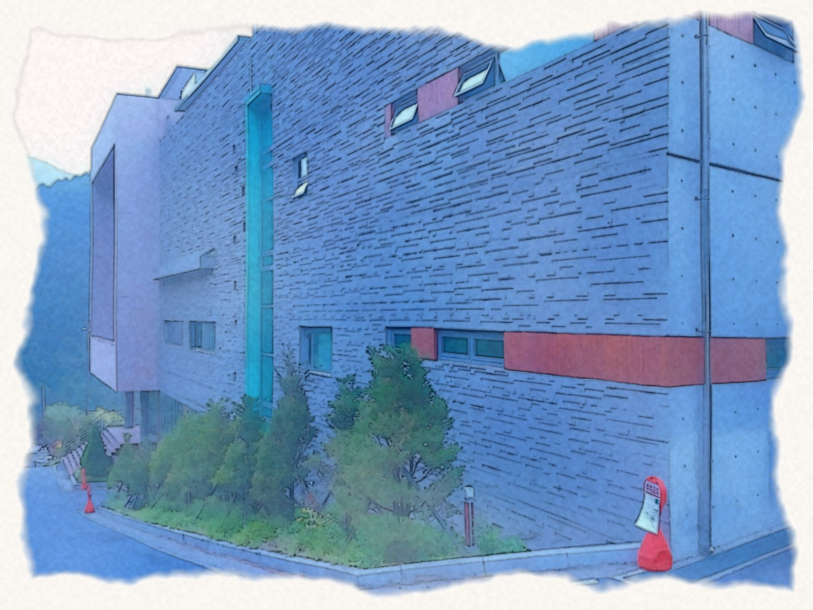
배움생활시 · 2014년가평의 아름다운 산하 / 폐부 깊숙한 곳까지 신선하게 해 줄 공기- 시냇물시냇물자연시 · 2014년 1월 3일한 순간도 같지 않은 모습 / 한 번도 같지 않은 속도
- 아픈 사랑아픈 사랑생활시 · 2014년 1월 8일해는 뉘엿뉘엿 / 옅은 어둠 대지 덮었거늘
- 하나만 하기하나만 하기생활시 · 2014년 1월 20일텔레비전 보면서 과자 먹고 / 밥 먹으면서 신문보고
- 무엇이 하고 싶다면무엇이 하고 싶다면생활시 · 2014년 1월 20일무엇이 하고 싶다면 아무것도 하지 마세요 / 그 일이 하고 싶다면 그 일만큼은 하지 마세요
- 나의 아버지나의 아버지생활시 · 2014년 1월 29일아버지, / 입의 읊조림 만으로만 남은
- 외갈메기외갈메기생활시 · 2014년 2월 27일같이 해 주는 이 하나 없는 / 짝 잃은 외갈메기
- 다름다름생활시 · 2014년 5월 15일같지 않다는 것 / 아담하다는 것
- 등산등산생활시 · 2014년 7월 15일혼자 나선 등산 / 한 눈 파는 순간 길을 잃고
- 사막의 선교 거목사막의 선교 거목묵상시 · 2014년 7월 26일김하박국 한국의 안락함 버리고 / 페르시아, 아랍권, 북아프리카의 부름
- 누가 ‘나’인가?누가 ‘나’인가?생활시 · 2014년 8월 4일틀린 말 다른 생각 / 독설을 뿜어내는 입
- 주고픔주고픔묵상시 · 2014년 8월 26일대지 머금는 물 / 나무뿌리 적시고
- 기도기도묵상시 · 2014년 10월 22일불편한 기도는 / 맘대로 나오고
- 거목거목생활시 · 2014년 11월 17일큰 키 / 굵은 몸통
- 바다바다자연시 · 2014년 11월 19일나는 당신이고 / 당신은 나입니다
- 연필(鉛筆)연필(鉛筆)생활시 · 2014년 11월 19일예쁘게 깍아주세요 / 당신의 기쁨이 되고 싶어요
- 하늘하늘자연시 · 2014년 11월 19일가끔은 나를 보아 주세요 / 나는 늘 당신을 보고 있습니다
- 산다는 건 2산다는 건 2자연시 · 2014년더 높은 연봉 / 럭셔리 양복을 입고
- 어울림어울림생활시 · 2014년연순한 흰빛 / 수줍은 분홍색의 화사한 벚꽃
- 어울림2어울림2생활시 · 2014년삐쭉빼쭉 삐져나온 벚나무 꽃 / 사이사이 배경되어준 플러터너스
- 어울림 3어울림 3생활시 · 2014년삐쭉빼쭉 솟아나 아름다움을 뽐내는 벚나무 / 은은한 푸른 빛으로 배경되어준 포플러
- 거목거목생활시 · 2014년외줄기 하나 솟더니만 / 살을 에고
- 새벽에 홀로 깨어새벽에 홀로 깨어자연시 · 2014년아버지 꿈을 꾸었습니다 / 아버지가 곁에 계셨습니다
- 매미매미자연시 · 2014년초가을 한 풀 꺽인 매미의 울음 / ‘나 오늘 밤이 마지막이라오’
- 친구친구생활시 · 2014년더워 옷 벗어 어깨 맨 것 아니오 / 비 두려워 우산 집어든 것 아니라니까
- 아버지 자리아버지 자리생활시 · 2014년아버지가 앉던 / 식탁에 앉으니
- 갯벌갯벌자연시 · 2014년바다와 땅이 사랑하였네 / 소금과 흙이 합방하니
- 눈(目)눈(目)묵상시 · 2014년 1월 8일누가 눈이 보배라 했는가? / 너무 먼 것도
- 생명의 꽃생명의 꽃묵상시 · 2014년 4월 24일꽃보다 더 아름다운 생명 / 꽃 구경 온 애기 엄마
2015년 15편
 발자국생활시 · 2015년 2월 4일그대와 걸은 / 다른 길
발자국생활시 · 2015년 2월 4일그대와 걸은 / 다른 길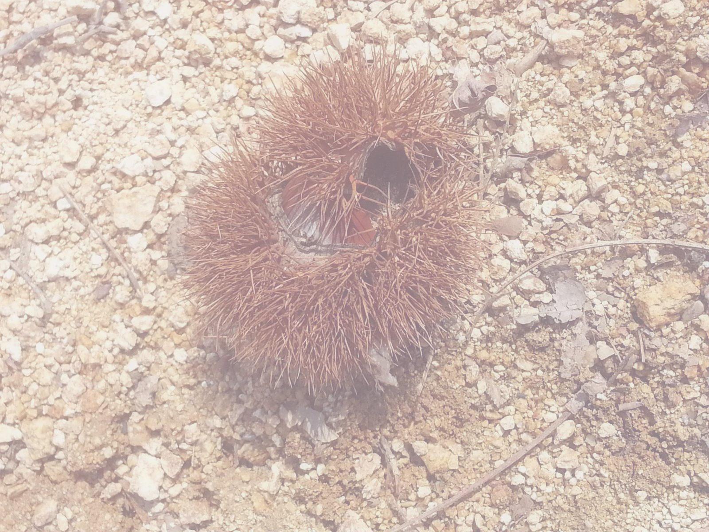
밤 송이자연시 · 2015년 3월 3일토실토실 윤기 가득한 / 가을 풍요 상징의 꿈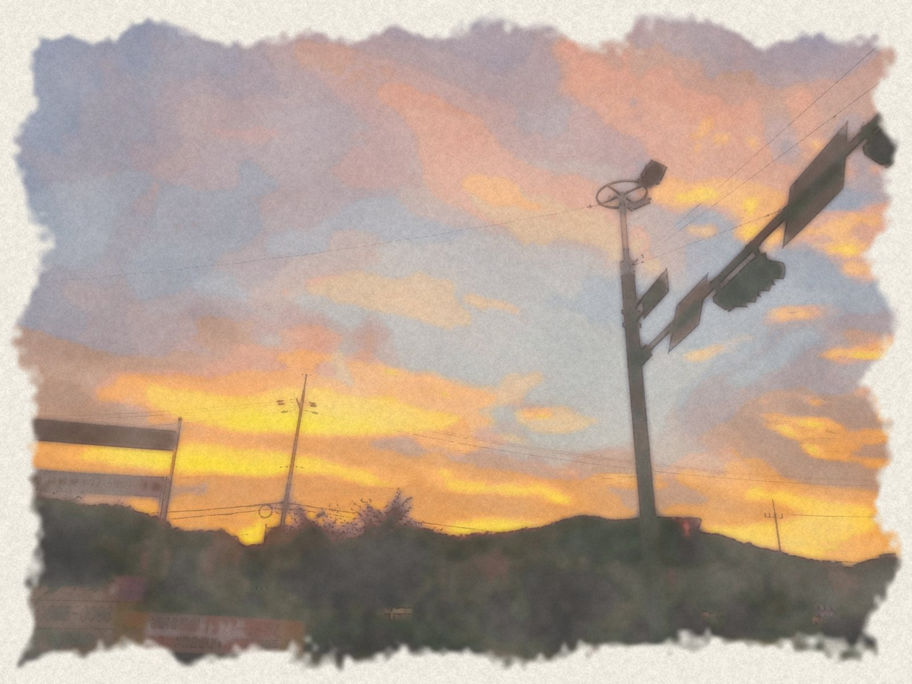
석양(夕陽)자연시 · 2015년 3월 4일멀리 나뭇가지 사이 / 불타는 듯 빛나는 듯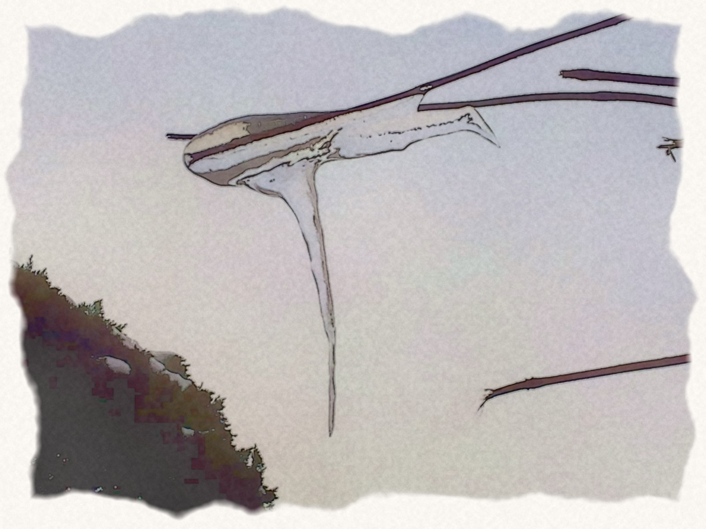
고드름자연시 · 2015년 3월 4일눈 녹아 물 떨어지고 / 물 떨어져 얼음되고- 삼방(三方)삼방(三方)생활시 · 2015년 4월 8일행복한 인생 / 삼방(三方)이 절실
- 꽃 비 - 1꽃 비 - 1자연시 · 2015년 4월 15일숨으로 들이 마시고 싶은 봄날의 햇살 / 겨울 끝자락의 시샘 바람 어우러져
- 벗 나무벗 나무생활시 · 2015년 4월 15일튼튼한 밑 둥의 듬직함 / 줄기에 맞춘 적당히 큰 키
- 아픔아픔생활시 · 2015년 7월 8일아픔이 느껴지지 않는 아픔 / 고통이 닿아지지 않는 고통
- 은혜 아니면...은혜 아니면...묵상시 · 2015년 8월 8일은혜 아니면... / 은혜 아니면
- 에스라 2015에스라 2015생활시 · 2015년 8월 19일비움 / 비움이 채움
- 무릉도원(武陵桃源)무릉도원(武陵桃源)생활시 · 2015년 8월 20일아무 걱정 없이 사는 별천지(別天地) 무릉도원 / 친구랑 있으니 어디든 별천지
- 송향(松香)송향(松香)생활시 · 2015년 10월 16일구비친 줄기 / 삐친 솔잎
- 바다바다자연시 · 2015년 10월 30일동트는 금빛 / 정열의 은빛
- VeteranVeteran생활시 · 2015년 7월 1일모세 광야 40년 / 출애굽 선봉장 예비하시듯
- 어느 목사의 기도어느 목사의 기도묵상시 · 2015년 12월 4일엄동설한 삭풍에 흔들리는 비닐 벽 / 눈보라 방패막이 되련마는
2016년 7편
- 둥지둥지묵상시 · 2016년 6월 23일까마귀는 새끼 다 자라면 / 매몰차게 둥지 밖으로 밀쳐낸다 하던데
- 해마다 그렇게나 소망의 향로 올렸나보다해마다 그렇게나 소망의 향로 올렸나보다자연시 · 2016년 7월 2일신랑:고형권 신부:김인숙 / 주례 이재선목사(새암교회)
- 참 행복을 찾아서참 행복을 찾아서묵상시 · 2016년 7월 16일(새암 찬양축제 가사) / 나의 기쁨과 만족 위해
- 삽니다삽니다생활시 · 2016년 7월 26일죽지못해 삽니다 / 살아 있어 삽니다
- 사명(使命)사명(使命)생활시 · 2016년 8월 2일사명(使命)은 사명(死命)이다 / 사명
- 밤 꽃밤 꽃자연시 · 2016년 8월 24일하루 종일 피어 있느라 힘들텐데 / 밤에는 좀 쉬지
- 까까머리까까머리생활시 · 2016년 8월 24일솔나무 머리 깍고 까까머리 / 제멋대로 자란 헤어스타일